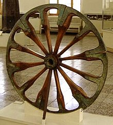

Surgimento Da Tecnologia
Embora não existam registros escritos relativos ao tempo pré-histórico, podemos ter uma ideia a respeito de como o mundo, e seus mecanismos, foram compreendidos ou interpretados pelo homem pré-histórico, através de evidências diretas e indiretas. Um breve início a tecnologia na época pré-histórica foi com as técnicas avançadas para lascar pedras criando ferramenta. A evidência direta inclui as pinturas rupestres encontradas na Espanha e na França, e outras obras de arte como, por exemplo, a Vénus de Willendorf. As outras evidências diretas são constituídas por ossos (como os que foram objecto de trepanação), múmias e ferramentas antigas. Apesar da relativa falta da evidência direta sobre o conhecimento possuído pelo homem pré-histórico, as tecnologias pré-históricas sobreviventes também permitem conjecturar sobre a compreensão do mundo nessa era.
A sobrevivência era a prioridade; mesmo hoje, com o grande tsunami de 2004, os ilhéus de Andaman recordaram os conselhos dos seus antepassado, foram para as elevações, e sobreviveram ao tsunami, como seus antepassados fizeram em tempos imemoriais. Estas pessoas relataram este conhecimento às tripulações do avião de resgate que estavam pairando sobre as ilhas de Andaman, após o avião ter sido atacado pelas suas setas.
Primeiros Sinais no Mundo sobre a Tecnologia
Mesopotâmia: Os babilônios forneceram elementos para a ciência no seu estado nascente, onde vários povos como os sumérios, deixaram contribuições à geografia. Todas as tecnologias vinculadas à manutenção e expansão das cidades, inclusive aquelas relativas à medicina que envolve a prevenção de moléstias que afetam grandes concentrações humanas já se encontrava presente, em alguns costumes de alimentação. Os fundamentos da matemática foram estabelecidos pelos antigos sumérios e babilônios, que viveram no segundo milênio antes da nossa era.
Antigo Egito: Os egípcios inventaram e usaram muitas máquinas simples, como a rampa e a alavanca, para auxiliar os seus processos da construção. O suporte de escrita egípcio, feito do papiro, e a cerâmica, foram produzidos e exportados para toda a bacia do Mediterrâneo. A roda, contudo, só chegou quando invasores estrangeiros introduziram a quadriga.
Europa tribal: Por volta de 1.000 a.C.-500 a.C., as tribos germânicas tiveram uma civilização da idade do bronze, enquanto os Celtas estiveram na idade do ferro na época da cultura de Hallstatt. Posteriormente, as suas culturas entraram em colisão com as práticas militares e agrícolas dos Romanos, há dois mil anos. Mas o tempo e os recursos necessários para conduzir a ciência tiveram que decorrer gradualmente.
Europa: A queda do Império romano abrandou, mas não parou a inovação; os romanos preferiam o uso de óleos no banho, mas o sabão foi trazido pelas tribos que procuravam incorporar-se no império. Por altura da queda de Roma, a armadura de malha metálica que nós associamos com o cavaleiro medieval já era usada pela cavalaria pesada de Roma, até ser substituída pela armadura pesada mil anos mais tarde.

Medieval: Veja sobre a era Medieval: Clique aqui
Tecnologias do Século XIX
- A locomotiva a vapor, inventada por Richard Trevithick, abriu o caminho ao transporte pelo caminho de ferro.
- Barco a vapor
- Charles Babbage
- Turbina a vapor
Tecnologias do Século XX
- Rádio
- Avião
- Locomotiva com turbina a vapor
- Televisão
- Radar
- Computador
- Energia nuclear
- Projecto Manhattan
- Telefone
- Foguetão (Wernher von Braun)
- Robô industrial (George Devol)